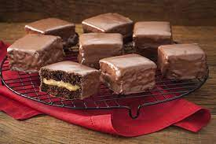

Ingredientes:
-1 lata de Leite
-2 xícaras (chá) de Leite Líquido
-1 xícara (chá) de açúcar mascavo
-1 colher (chá) de canela em pó
-Meia colher (chá) de cravo em pó
-Meia xícara (chá) de mel
-1 xícara (chá) de Chocolate em Pó
-2 xícaras (chá) de farinha de trigo
-2 colheres (chá) de fermento em pó
-1 colher (chá) de bicarbonato de sódio
Modo de preparo
1.Retire o rótulo e o excesso de cola da lata de Leite MOÇA.
2.Coloque-a, fechada, em uma panela de pressão e adicione água suficiente para cobri-la.
3.Tampe a panela e cozinhe em fogo médio por 15 minutos (contados após início da fervura).
4.Espere sair toda a pressão, abra a panela, retire a lata com cuidado e deixe-a esfriar antes de abri-la.
5.Transfira o conteúdo para um recipiente e misture para ficar homogêneo. Reserve.
6.Em um recipiente, misture o Leite NINHO, o açúcar mascavo, a canela, o cravo e o mel.
7.Peneire por cima o Chocolate em Pó NESTLÉ DOIS FRADES e a farinha de trigo.
8. Junte o fermento e o bicarbonato e misture tudo muito bem até obter uma massa lisa.
9.Despeje a massa em uma assadeira média (22 x 33 cm) untada com manteiga e polvilhada com farinha de trigo e leve ao forno médio (180°C), preaquecido, por cerca de 45 minutos.
10.Espere esfriar, corte a massa em quadrados e recheio com o Doce de Leite reservado.
11.Pique a Cobertura Chocolate GAROTO e prepare conforme as instruções da embalagem.
12.Banhe os pedaços de pão de mel, escorra o excesso de Chocolate e deixe-os secar sobre uma grelha.
13.Sirva a seguir.